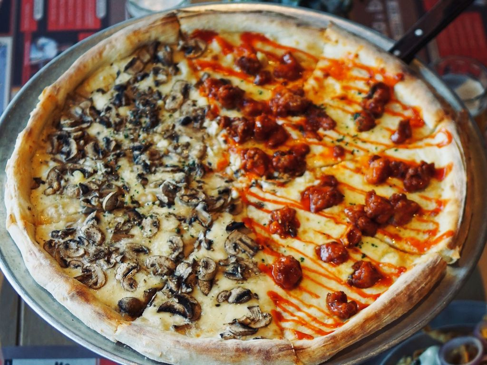

Spaghetti
Rp 35.000

Nasi Goreng
Rp 20.000

Pizza
Rp 50.000
Air Terjun Suwat. Suwat Waterfall atau Air Terjun Suwat memiliki pemandangan alam yang luar biasa. Air terjun ini tergolong masih jarang kunjungan wisatawan. Baik wisatawan domestik maupun mancanegara. Sehingga cocok sebagai tujuan untuk menenangkan diri.
Pusing dengan rutinitas sehari-hari? Yuk kita liburan ke tempat yang agak jauh tapi cukup worthy untuk me-refresh pikiran kalian. Tepatnya ke air terjun Suwat, atau yang biasa dikenal dengan Suwat Waterfall. Berada di desa Suwat berada di kabupaten Gianyar Bali, perjalanan menuju air terjun ini kurang lebih memakan waktu sekitar 2 jam perjalanan dari bandara I Gusti Ngurah Rai. Sebenarnya kalau dibilang jauh sih tidak juga, karena perjalanan kurang lebih hampir sama jika dibandingkan dengan lokasi wisata di Ubud, atau di tempat-tempat populer lain seperti danau Bratan, Jatiluwih, dan lain-lain. Saat liburan ke Bali kamu wajib banget menuju air terjun ini karena Suwat Waterfall
Baca Selengkapnya >>>
Rp 35.000
Rp 20.000
Rp 50.000